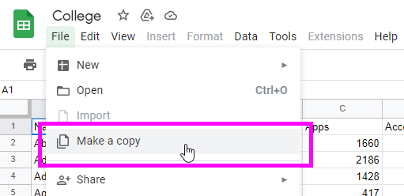
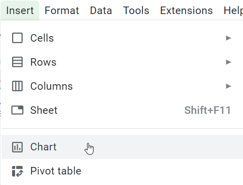
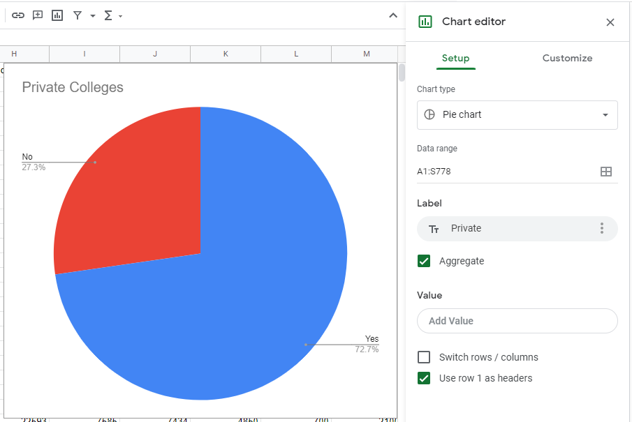
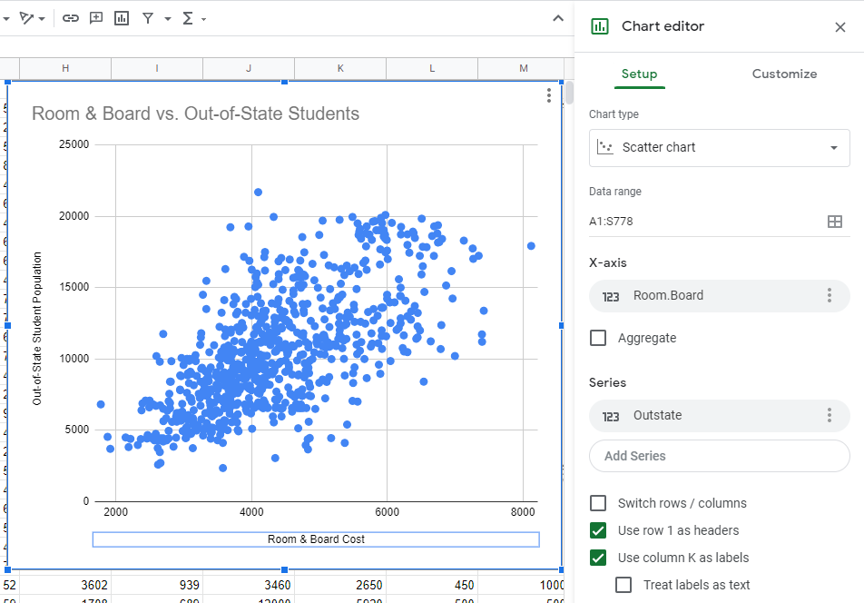
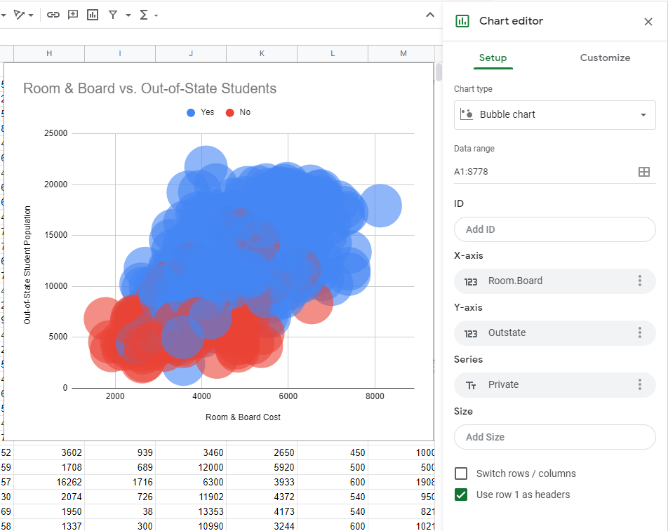
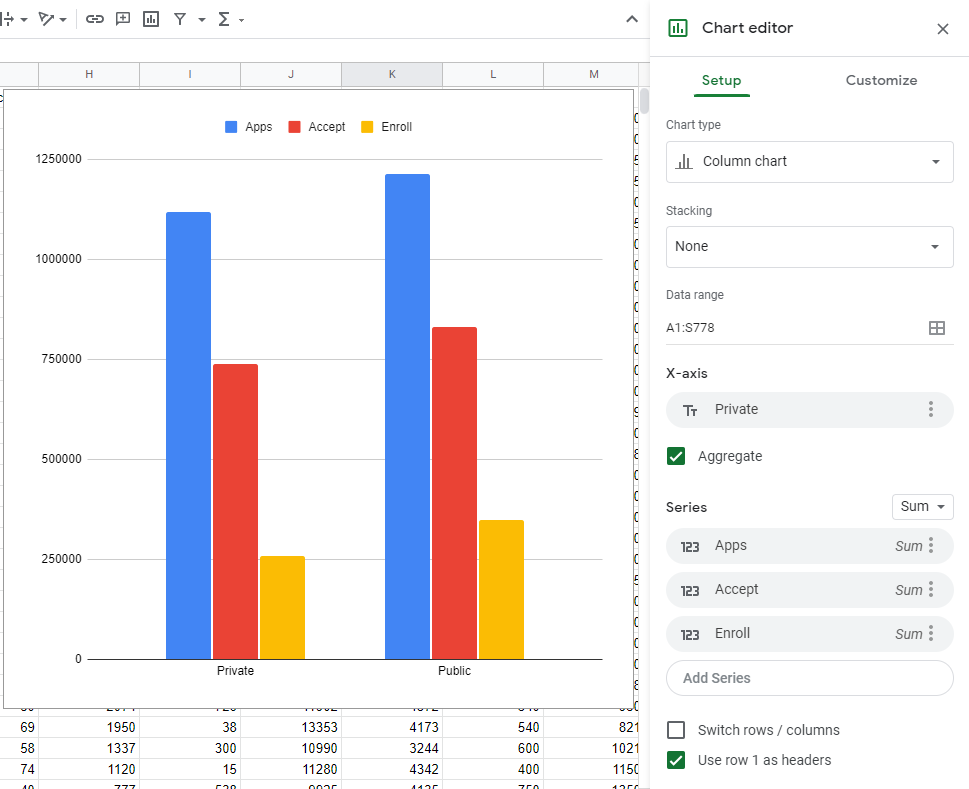

Data Visualization Follow-Along
Follow these instructions to get some practice visualizing data!
Part One: Spreadsheet Graphing
Take a look at some data in a spreadsheet, and see how it can be made into some basic charts.
Getting Started
The data is available here: https://docs.google.com/spreadsheets/d/1vqKSvuF79aOkbwFT3VR4fE4HLmGmt0f_vNthz3erDFk/edit?usp=sharing
Column Meanings
Take a look at the data. Here's a rundown of what each column actually means:
Private: Public/private indicatorApps: Number of applications receivedAccept: Number of applicants acceptedEnroll: Number of new students enrolledTop10perc: New students from top 10% of high school classTop25perc: New students from top 25% of high school classF.Undergrad: Number of full-time undergraduatesP.Undergrad: Number of part-time undergraduatesOutstate: Out-of-state tuitionRoom.Board: Room and board costsBooks: Estimated book costsPersonal: Estimated personal spendingPhD: Percent of faculty with Ph.D.’sTerminal: Percent of faculty with terminal degreeS.F.Ratio: Student/faculty ratioperc.alumni: Percent of alumni who donateExpend: Instructional expenditure per studentGrad.Rate: Graduation rate
Working with the Data
In order to work with it, it will be necessary to sign into a Google account. Once signed in, select "Make a copy" from the "File" menu:

After that, you can edit the spreadsheet and create charts! Select the "Chart" option from the "Insert" menu to add one:

Private College Pie Chart
Start with a basic chart showing how many of the colleges are private, and how many are public.
- If there is a title, click it and change it to "Private Colleges"
- In the "Chart editor" pane that appears on the right, choose "Pie chart" as the Chart type
- For the Data range, open the selector and choose "A1:S778"
- For the Label, choose "Private"
- Check the "Aggregate" box
- Remove any Value that was added
- Make sure to toggle "Use row 1 as headers"
At the end, it should look something like this:

It appears that there are many more private schools than public ones!
Room & Board vs. Out-of-State Tuition
Next, create a scatter plot comparing Room & Board cost to Out-of-State tuition.
- If there are titles, change them to the following:
- Main title: "Room & Board vs. Out-of-State"
- X-axis (horizontal axis) label: "Room & Board Cost"
- Y-axis label: "Out-of-State Student Tuition"
- In the "Chart editor" pane that appears on the right, choose "Scatter chart" as the Chart type
- For the Data range, open the selector and choose "A1:S778"
- For the X-axis (horizontal axis), select "Room.Board"
- Make sure "Aggregate" is not checked
- For the Series, select "Outstate"
- Make sure to toggle "Use row 1 as headers"
- Make sure the "Treat labels as text" checkbox at the bottom is not checked
At the end, it should look something like this:

Based on this, it appears that when the room & board cost is higher, there is also a higher out-of-state tuition.
OPTIONAL: Bubble Chart
To continue this line of thinking, change the chart into a Bubble chart, and add "Private" as the color dimension. The settings should be something like this:

Looks like private schools have both higher room & board costs and higher out-of-state tuition!
Applications, Acceptance, and Enrollment
For the next chart, find out how many students applied, were accepted, and enrolled at both private and public colleges.
- If there are titles, change them to properly match the data columns used
- In the "Chart editor" pane, choose "Column chart" as the Chart type
- For the Data range, open the selector and choose "A1:S778"
- For the X-axis (horizontal axis), select "Private"
- Make sure the "Aggregate" checkbox is checked
- For the Series, add each of the following:
- Apps
- Accept
- Enroll
- Set the Series Aggregate Type to "Sum"
- Make sure to toggle "Use row 1 as headers"
It should look something like this:

Even though there are many more private colleges, more students are enrolled at public colleges overall!
Part Two: Custom Programming with Python and ggplot
This part of the follow-along activity will take place in Google Colab. Open this notebook to begin. All of the instructions are there, along with the code!
Beyond
After part two, head back to the main page to see what else there is to explore!